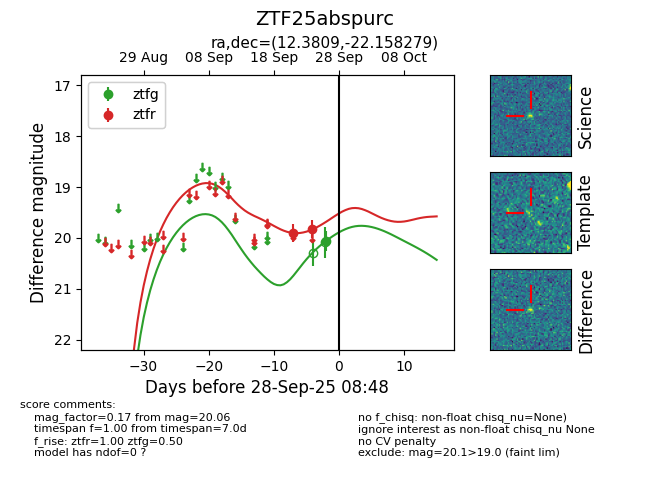
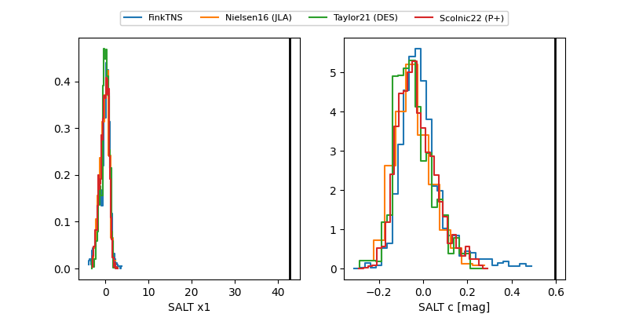

FINK: ZTF25abspurc
Lasair: ZTF25abspurc
ALeRCE: ZTF25abspurc
ZTF25abspurc (ztf,fink)
equatorial (ra, dec) = (12.3809,-22.15828)
galactic (l, b) = (117.8286,-85.01105)


last ztfg=20.06, ztfr=19.83
1 ztfg, 2 ztfr detections